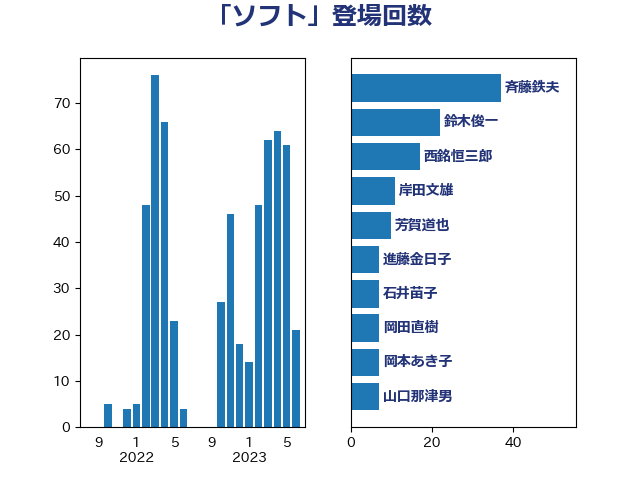

単語「ソフト」

| 斉藤鉄夫 | 公明党 | 37 回 |
| 鈴木俊一 | 自由民主党 | 22 回 |
| 西銘恒三郎 | 自由民主党 | 17 回 |
| 岸田文雄 | 自由民主党 | 11 回 |
| 芳賀道也 | 国民民主党 | 10 回 |
| 進藤金日子 | 自由民主党 | 7 回 |
| 石井苗子 | 日本維新の会 | 7 回 |
| 岡田直樹 | 自由民主党 | 7 回 |
| 岡本あき子 | 立憲民主党 | 7 回 |
| 山口那津男 | 公明党 | 7 回 |
| 仁木博文 | 無所属 | 7 回 |
| 田所嘉徳 | 自由民主党 | 6 回 |
| 松本剛明 | 自由民主党 | 6 回 |
| 嘉田由紀子 | 無所属 | 6 回 |
| 西村康稔 | 自由民主党 | 5 回 |
| 森田俊和 | 立憲民主党 | 5 回 |
| 新垣邦男 | 立憲民主党 | 5 回 |
| 小熊慎司 | 立憲民主党 | 5 回 |
| 一谷勇一郎 | 日本維新の会 | 5 回 |
| 高木陽介 | 公明党 | 4 回 |
| 鈴木義弘 | 国民民主党 | 4 回 |
| 萩生田光一 | 自由民主党 | 4 回 |
| 舩後靖彦 | れいわ新選組 | 4 回 |
| 永岡桂子 | 自由民主党 | 4 回 |
| 柳ヶ瀬裕文 | 日本維新の会 | 4 回 |
| 尾崎正直 | 自由民主党 | 4 回 |
| 大塚耕平 | 国民民主党 | 4 回 |
| 中野英幸 | 自由民主党 | 4 回 |
| 高橋光男 | 公明党 | 3 回 |
| 金城泰邦 | 公明党 | 3 回 |
| 野田聖子 | 自由民主党 | 3 回 |
| 野村哲郎 | 自由民主党 | 3 回 |
| 荒井優 | 立憲民主党 | 3 回 |
| 羽生田俊 | 自由民主党 | 3 回 |
| 礒崎哲史 | 国民民主党 | 3 回 |
| 根本幸典 | 自由民主党 | 3 回 |
| 木村英子 | れいわ新選組 | 3 回 |
| 平林晃 | 公明党 | 3 回 |
| 宮崎雅夫 | 自由民主党 | 3 回 |
| 宮崎勝 | 公明党 | 3 回 |
| 安江伸夫 | 公明党 | 3 回 |
| 大島敦 | 立憲民主党 | 3 回 |
| 堀場幸子 | 日本維新の会 | 3 回 |
| 城井崇 | 立憲民主党 | 3 回 |
| 古賀之士 | 立憲民主党 | 3 回 |
| 井坂信彦 | 立憲民主党 | 3 回 |
| 阿部司 | 日本維新の会 | 2 回 |
| 長友慎治 | 国民民主党 | 2 回 |
| 金村龍那 | 日本維新の会 | 2 回 |
| 足立敏之 | 自由民主党 | 2 回 |
| 赤嶺政賢 | 日本共産党 | 2 回 |
| 谷公一 | 自由民主党 | 2 回 |
| 藤井比早之 | 自由民主党 | 2 回 |
| 若松謙維 | 公明党 | 2 回 |
| 若宮健嗣 | 自由民主党 | 2 回 |
| 田島麻衣子 | 立憲民主党 | 2 回 |
| 田中健 | 国民民主党 | 2 回 |
| 牧山ひろえ | 立憲民主党 | 2 回 |
| 湯原俊二 | 立憲民主党 | 2 回 |
| 泉健太 | 立憲民主党 | 2 回 |
| 河野太郎 | 自由民主党 | 2 回 |
| 橘慶一郎 | 自由民主党 | 2 回 |
| 松原仁 | 立憲民主党 | 2 回 |
| 杉本和巳 | 日本維新の会 | 2 回 |
| 朝日健太郎 | 自由民主党 | 2 回 |
| 早稲田ゆき | 立憲民主党 | 2 回 |
| 庄子賢一 | 公明党 | 2 回 |
| 川田龍平 | 立憲民主党 | 2 回 |
| 岩谷良平 | 日本維新の会 | 2 回 |
| 山本佐知子 | 自由民主党 | 2 回 |
| 小倉將信 | 自由民主党 | 2 回 |
| 太栄志 | 立憲民主党 | 2 回 |
| 大野泰正 | 自由民主党 | 2 回 |
| 大口善徳 | 公明党 | 2 回 |
| 加藤勝信 | 自由民主党 | 2 回 |
| 加田裕之 | 自由民主党 | 2 回 |
| 中西健治 | 自由民主党 | 2 回 |
| 中川宏昌 | 公明党 | 2 回 |
| ながえ孝子 | 無所属 | 2 回 |
| 黄川田仁志 | 自由民主党 | 1 回 |
| 鰐淵洋子 | 公明党 | 1 回 |
| 鬼木誠 | 立憲民主党 | 1 回 |
| 高良鉄美 | 無所属 | 1 回 |
| 高橋千鶴子 | 日本共産党 | 1 回 |
| 高木真理 | 立憲民主党 | 1 回 |
| 高木かおり | 日本維新の会 | 1 回 |
| 馬場成志 | 自由民主党 | 1 回 |
| 音喜多駿 | 日本維新の会 | 1 回 |
| 階猛 | 立憲民主党 | 1 回 |
| 阿部知子 | 立憲民主党 | 1 回 |
| 阿部弘樹 | 日本維新の会 | 1 回 |
| 長峯誠 | 自由民主党 | 1 回 |
| 鎌田さゆり | 立憲民主党 | 1 回 |
| 鈴木隼人 | 自由民主党 | 1 回 |
| 鈴木庸介 | 立憲民主党 | 1 回 |
| 金子恭之 | 自由民主党 | 1 回 |
| 野田国義 | 立憲民主党 | 1 回 |
| 遠藤良太 | 日本維新の会 | 1 回 |
| 近藤和也 | 立憲民主党 | 1 回 |
| 輿水恵一 | 公明党 | 1 回 |
| 足立康史 | 日本維新の会 | 1 回 |
| 赤松健 | 自由民主党 | 1 回 |
| 西田昭二 | 自由民主党 | 1 回 |
| 藤巻健太 | 日本維新の会 | 1 回 |
| 藤岡隆雄 | 立憲民主党 | 1 回 |
| 若林健太 | 自由民主党 | 1 回 |
| 緑川貴士 | 立憲民主党 | 1 回 |
| 紙智子 | 日本共産党 | 1 回 |
| 竹内譲 | 公明党 | 1 回 |
| 竹内真二 | 公明党 | 1 回 |
| 稲津久 | 公明党 | 1 回 |
| 福重隆浩 | 公明党 | 1 回 |
| 福田昭夫 | 立憲民主党 | 1 回 |
| 神谷裕 | 立憲民主党 | 1 回 |
| 石垣のりこ | 立憲民主党 | 1 回 |
| 石原正敬 | 自由民主党 | 1 回 |
| 石井浩郎 | 自由民主党 | 1 回 |
| 石井拓 | 自由民主党 | 1 回 |
| 矢倉克夫 | 公明党 | 1 回 |
| 盛山正仁 | 自由民主党 | 1 回 |
| 畦元将吾 | 自由民主党 | 1 回 |
| 田村貴昭 | 日本共産党 | 1 回 |
| 田嶋要 | 立憲民主党 | 1 回 |
| 猪瀬直樹 | 日本維新の会 | 1 回 |
| 牧野たかお | 自由民主党 | 1 回 |
| 片山大介 | 日本維新の会 | 1 回 |
| 渡辺博道 | 自由民主党 | 1 回 |
| 清水貴之 | 日本維新の会 | 1 回 |
| 津島淳 | 自由民主党 | 1 回 |
| 沢田良 | 日本維新の会 | 1 回 |
| 池畑浩太朗 | 日本維新の会 | 1 回 |
| 横沢高徳 | 立憲民主党 | 1 回 |
| 柘植芳文 | 自由民主党 | 1 回 |
| 松沢成文 | 日本維新の会 | 1 回 |
| 松川るい | 自由民主党 | 1 回 |
| 本田顕子 | 自由民主党 | 1 回 |
| 末次精一 | 立憲民主党 | 1 回 |
| 末松信介 | 自由民主党 | 1 回 |
| 早坂敦 | 日本維新の会 | 1 回 |
| 斎藤アレックス | 国民民主党 | 1 回 |
| 後藤茂之 | 自由民主党 | 1 回 |
| 広瀬めぐみ | 自由民主党 | 1 回 |
| 平木大作 | 公明党 | 1 回 |
| 平山佐知子 | 無所属 | 1 回 |
| 工藤彰三 | 自由民主党 | 1 回 |
| 川崎ひでと | 自由民主党 | 1 回 |
| 岸真紀子 | 立憲民主党 | 1 回 |
| 山田美樹 | 自由民主党 | 1 回 |
| 山本博司 | 公明党 | 1 回 |
| 山岡達丸 | 立憲民主党 | 1 回 |
| 山口壯 | 自由民主党 | 1 回 |
| 尾身朝子 | 自由民主党 | 1 回 |
| 小林史明 | 自由民主党 | 1 回 |
| 宮本岳志 | 日本共産党 | 1 回 |
| 大石あきこ | れいわ新選組 | 1 回 |
| 塩田博昭 | 公明党 | 1 回 |
| 堀井巌 | 自由民主党 | 1 回 |
| 和田政宗 | 自由民主党 | 1 回 |
| 古川禎久 | 自由民主党 | 1 回 |
| 勝部賢志 | 立憲民主党 | 1 回 |
| 倉林明子 | 日本共産党 | 1 回 |
| 伊藤渉 | 公明党 | 1 回 |
| 伊藤俊輔 | 立憲民主党 | 1 回 |
| 伊波洋一 | 無所属 | 1 回 |
| 仁比聡平 | 日本共産党 | 1 回 |
| 井上貴博 | 自由民主党 | 1 回 |
| 井上哲士 | 日本共産党 | 1 回 |
| 中野洋昌 | 公明党 | 1 回 |
| 中村裕之 | 自由民主党 | 1 回 |
| 中川郁子 | 自由民主党 | 1 回 |
| 中山展宏 | 自由民主党 | 1 回 |
| 中司宏 | 日本維新の会 | 1 回 |
| 上田清司 | 国民民主党 | 1 回 |
| 三浦靖 | 自由民主党 | 1 回 |